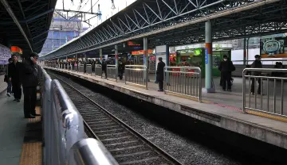
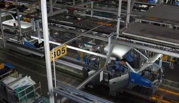
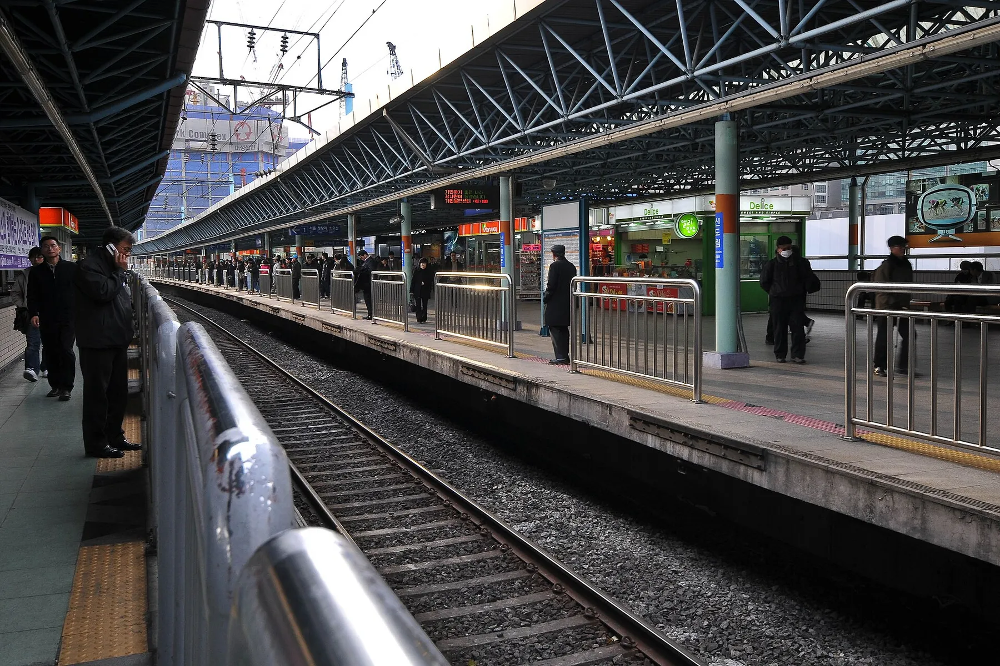
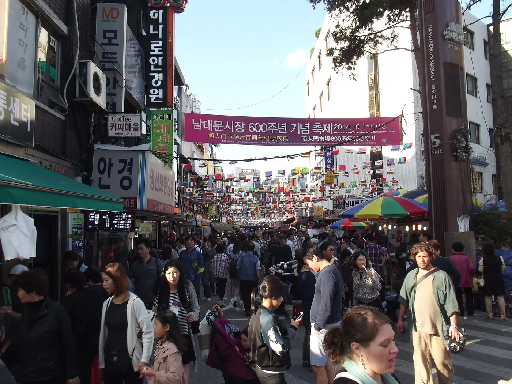
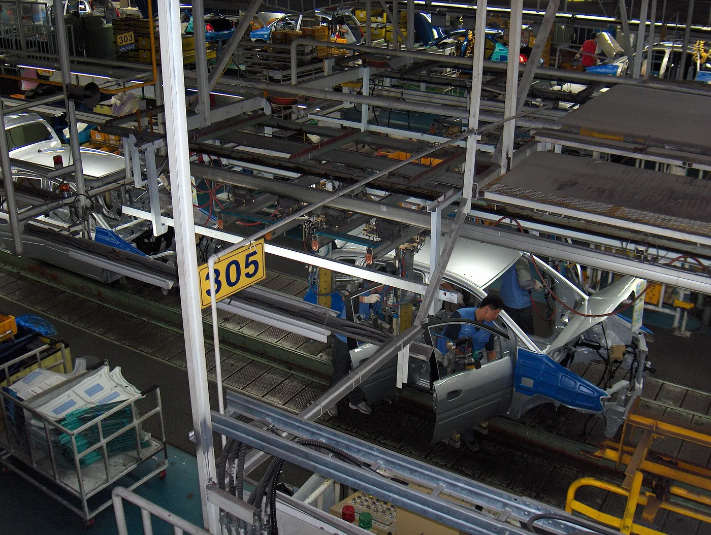
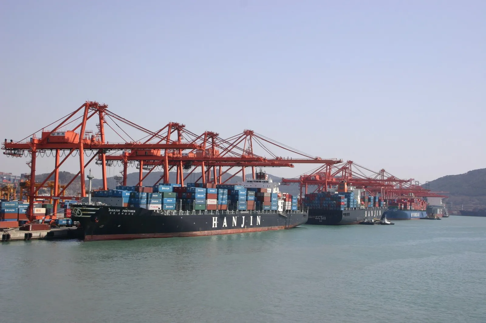
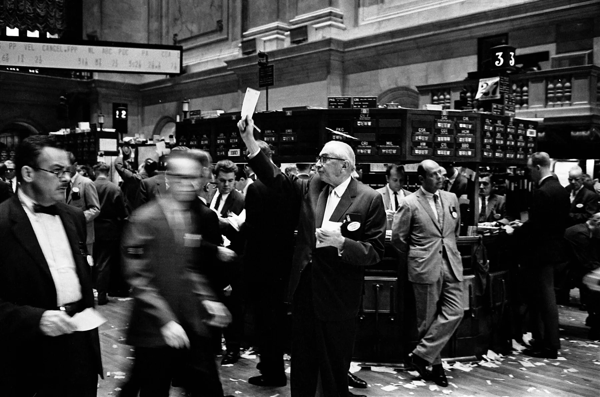
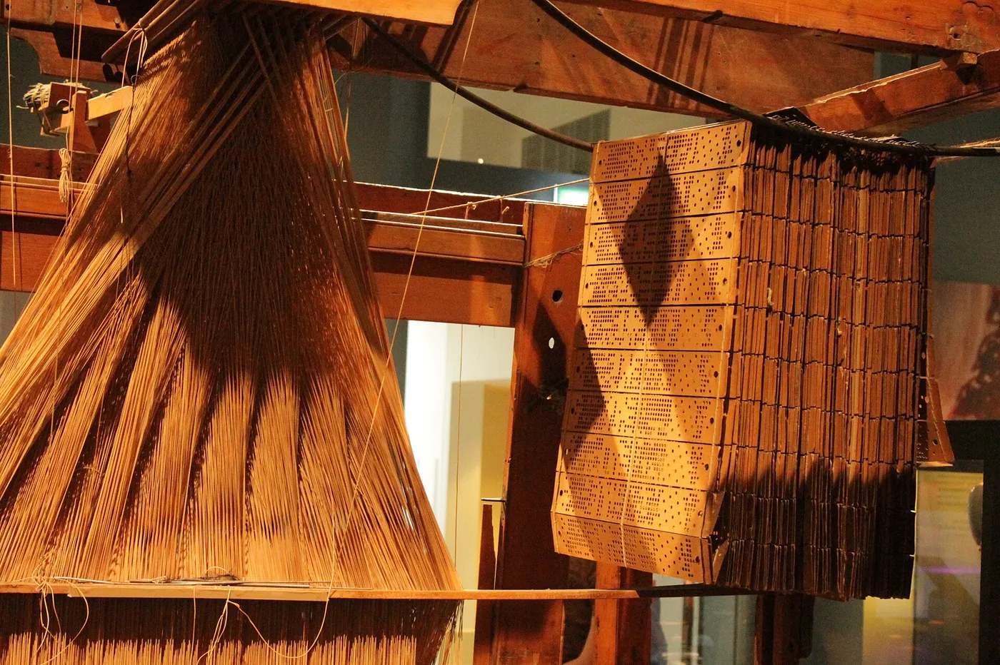

일상과  
이와이렙스를 설립해 아이디어를 실제 서비스로 옮기고 있습니다.




AI를 실질적인 도구로 적용합니다
- 새로운 모델과 도구를 검토합니다.
- 필요한 경우 직접 실험과 파인튜닝을 수행합니다.
- 데이터에서 패턴과 이상 신호를 찾아 실제 의사결정으로 잇습니다.
설명을 위한 예시 데이터입니다.
반복 가능한 판단을 알고리즘화합니다

명확한 규칙과 검증 가능한 기준이 있는 과정은 자동화의 대상이 될 수 있습니다.
매매 전략과 운영 워크플로를 구조화하여 더 일관되고 재현 가능한 결과를 만듭니다.

평소의 배를 넘으면 신호
파란 선을 옮겨 보세요. 손으로 정한 기준이 그대로 규칙이 됩니다.
하루 변동폭이 평소의 2.4배를 넘는 날에만 매매를 검토합니다.
예시 96일 가운데 7일이 규칙에 걸립니다. 같은 데이터에 같은 규칙을 적용하면 결과는 언제나 같습니다.
if today_range > 2.4 * usual_range:
review_trade()